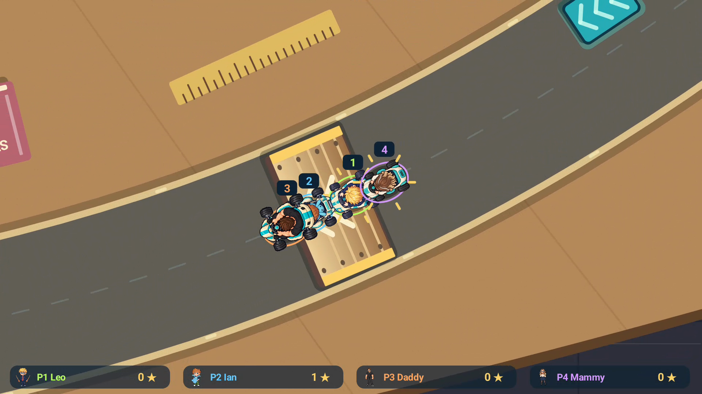
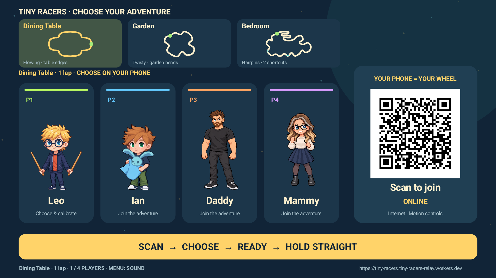
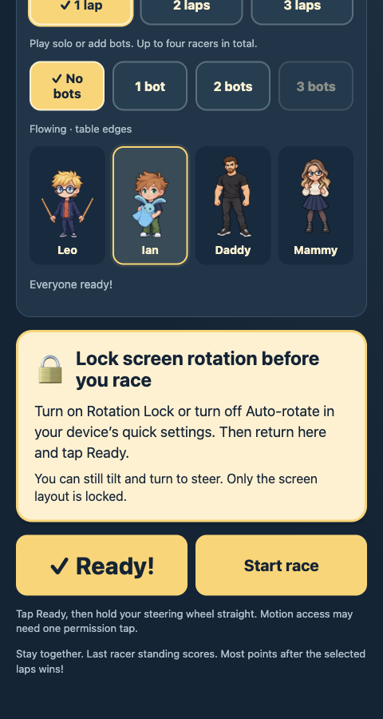
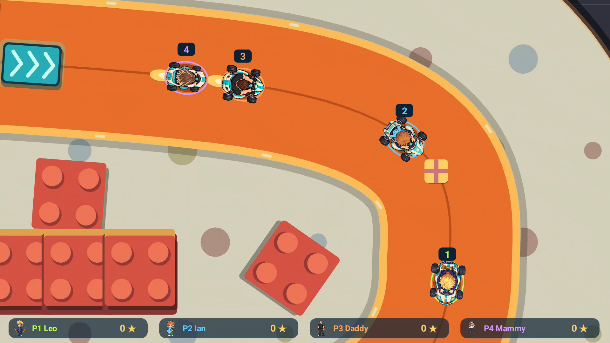
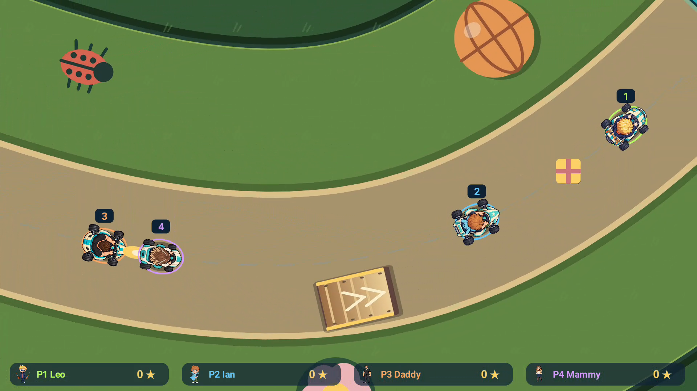
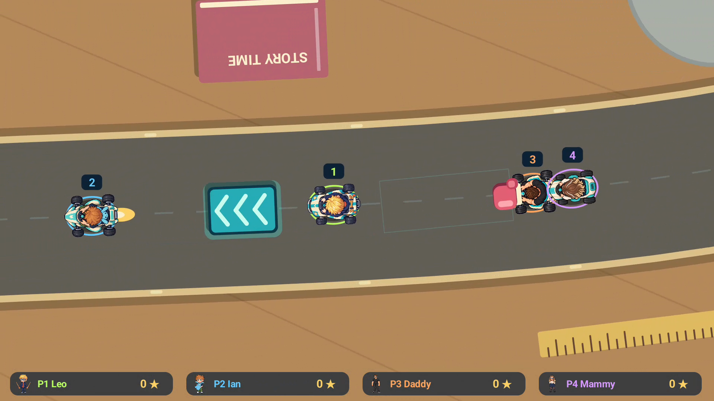
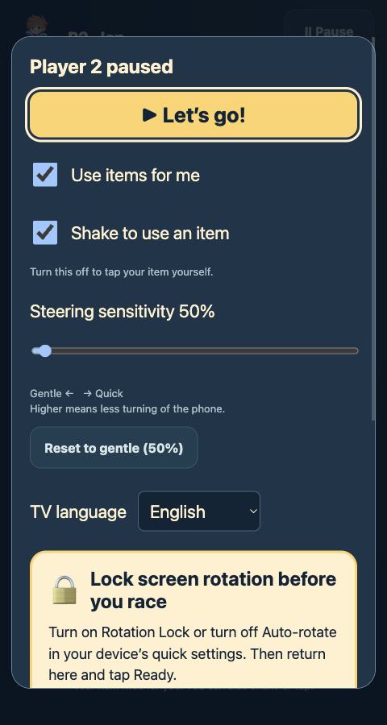
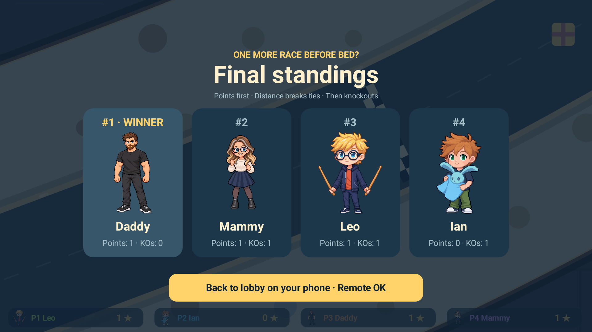

01 · Ramp battle
Four cars bunched together over a wooden ramp, with a ruler above the road.

01-ramp-battle.png
Eight current screenshots, numbered in upload order. Click Copy caption beneath each image. Gameplay uses scripted controllers in the Android TV emulator; the QR in the lobby image belongs to a recorded session.
Four cars bunched together over a wooden ramp, with a ruler above the road.

01-ramp-battle.png
Three track outlines above four characters; QR code and ONLINE on the right.

02-tv-lobby.png
Tall phone screen with character choices, rotation-lock reminder and yellow Ready button.

03-controller-ready.png
Bright orange bend with large red building blocks and four racers.

04-bedroom.png
Green grass, ladybird on the left, basketball above the bend and a wooden ramp below.

05-garden.png
Brown table, Story Time book, turquoise booster and pink boxing glove beside two cars.

06-dining-table.png
Tall phone screen headed Player 2 paused, with checkboxes and steering sensitivity at 50%.

07-controller-options.png
Final standings with Daddy first, Mammy second, Leo third and Ian fourth.

08-final-standings.png